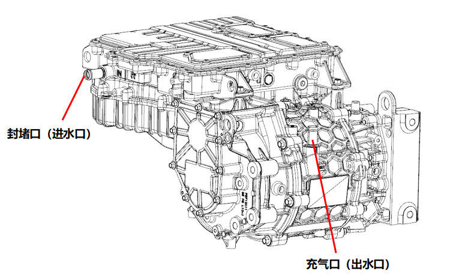
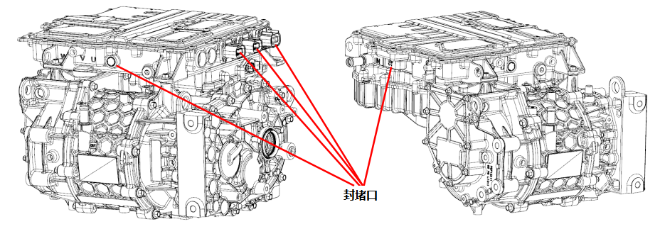
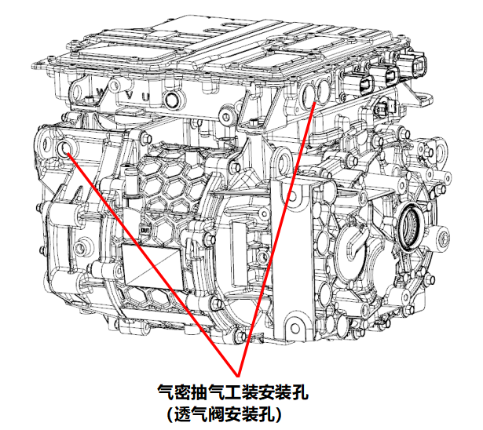

1、试验介质为气态介质，气体介质可以是空气、氮气或惰性气体，介质温度应与环境温度一致。
2、测量仪表的精度应不低于1.5级，建议量程为试验压力的1.5～3倍。
3、安装专用水道气密封堵工装和水道气密充气工装，然后向电驱动总成冷却回路中平缓充入200±5 kPa的试验介质，充气时间15s，稳压5s，检测5s，如泄漏量≤5mL/min则为合格。

1、气密测试前确认已取下电机后端盖位置1颗透气阀。
2、使用专用腔体气密封堵工装封堵AC接插件接口、PTC接插件接口、OBC接插件接口、低压接插件接口和控制器透气阀安装孔。

3、将专用腔体气密抽气工装安装电机后端盖透气阀安装孔和直流母线连接孔。
4、采用负压方式进行腔体气密检测，且需同时连接2个抽气工装进行抽气，平缓抽取腔体内部空气至负压22±1 kPa，抽气时间45s，稳压10s，检测5s，如泄漏量≤20mL/min则为合格。

5、腔体气密测试合格后，向安装孔分别压入透气阀。